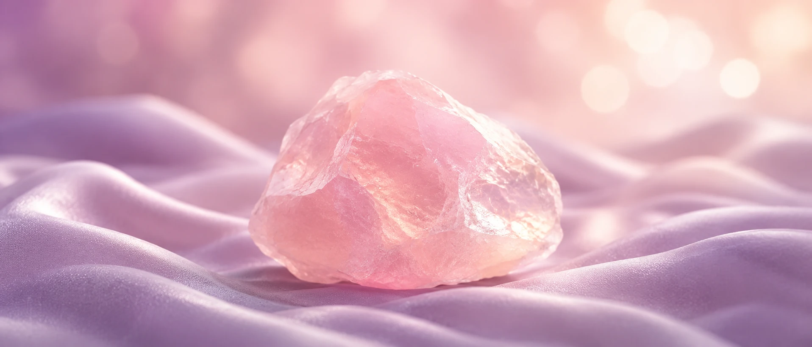
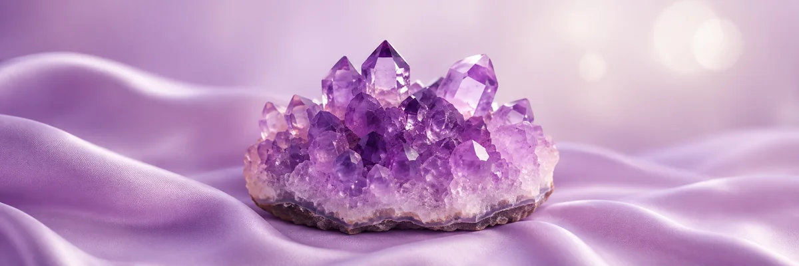
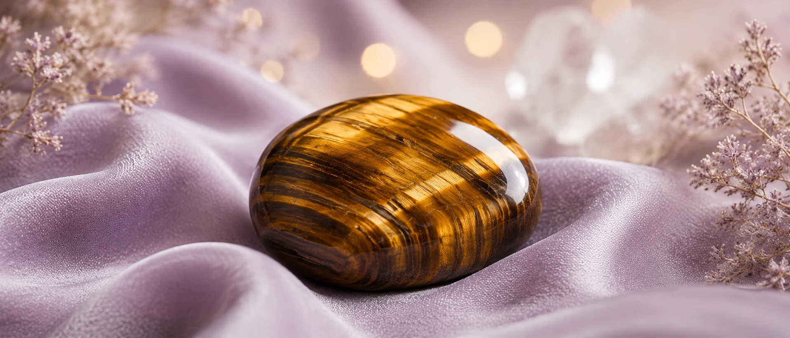
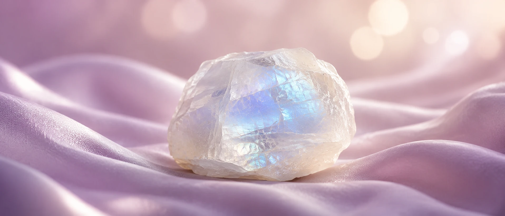

Rose Quartz
Traditionally associated with love, compassion and emotional softness. Rose Quartz is often chosen as a reminder to approach relationships—and yourself—with patience and care.
Find Rose Quartz in the libraryAura Nova Gems Learning Hub
Explore 30 healing crystals and discover their traditional meanings, symbolic associations, colors, chakras and zodiac connections. Use this guide to compare stones and choose one that feels meaningful for your personal journey.

Understanding the tradition
Crystal meanings are the symbolic qualities and traditional associations people connect with natural stones. Across different cultures and periods, crystals have appeared in jewelry, ceremonial objects, decorative arts and personal rituals. Their meanings have been shaped by color, rarity, place of origin, folklore and the ways communities used them.
Color is often one of the easiest starting points. Pink stones such as Rose Quartz are commonly associated with compassion and affection. Deep purple Amethyst is linked with reflection and intuition. Golden stones such as Citrine and Tiger's Eye are often connected with confidence, optimism and abundance, while dark stones such as Black Tourmaline and Obsidian are traditionally associated with grounding and protection.
These associations are not universal rules. A crystal can carry different meanings in different traditions, and a person's own memories or intentions may shape how a stone feels to them. Think of this guide as a clear reference for comparing commonly shared traditions, not as a fixed prescription.
Everyday practices
People often include crystals in reflective or meaningful routines. The purpose is usually symbolic: the stone can act as a visual reminder of a chosen intention.
Quick comparison
Compare eight popular stones before exploring the complete searchable library.
| Crystal | Traditional Meaning | Common Intention | Zodiac Association |
|---|---|---|---|
| Rose Quartz | Love and compassion | Relationships and self-care | Taurus, Libra |
| Amethyst | Calm and intuition | Meditation and evening rituals | Pisces, Aquarius |
| Citrine | Abundance and optimism | Confidence and success | Leo, Gemini |
| Tiger's Eye | Courage and focus | Career and decision-making | Leo, Gemini |
| Moonstone | New beginnings | Reflection and personal growth | Cancer, Libra |
| Black Tourmaline | Protection and grounding | Creating a grounded space | Capricorn, Libra |
| Labradorite | Transformation | Intuition and change | Leo, Scorpio |
| Fluorite | Clarity and focus | Study and organization | Capricorn, Pisces |
Visual crystal guide
Natural stones vary in tone and pattern. Use the images as a visual reference, then compare traditional associations in the library below.

Search crystal meanings
30 crystals shown
Try searching by a broader intention such as love, calm, protection, abundance or focus.
Popular crystal meanings

Traditionally associated with love, compassion and emotional softness. Rose Quartz is often chosen as a reminder to approach relationships—and yourself—with patience and care.
Find Rose Quartz in the library
Known for its purple color and long connection with reflection, calm and intuition. It is commonly included in meditation spaces and quiet evening routines.
Find Amethyst in the library
Its golden bands have made Tiger's Eye a traditional symbol of courage, discernment and grounded confidence—especially when facing decisions or change.
Find Tiger's Eye in the libraryWarm and bright, Citrine is commonly connected with optimism, creativity and abundance. Many people choose it as a symbol of confident forward movement.
Find Citrine in the library
Moonstone is traditionally associated with intuition, cycles and new beginnings. Its shifting sheen makes it a meaningful choice for periods of transition.
Find Moonstone in the libraryCelebrated for its flashes of color, Labradorite symbolizes transformation, imagination and trusting your inner direction when entering unfamiliar territory.
Find Labradorite in the libraryBeginner guide
Begin with the meaning you want to keep close, then consider color, size and how you plan to use the stone. There is no single correct choice; personal connection can matter as much as tradition.
Protect your collection
Care depends on a stone's mineral composition, hardness and finish. When unsure, use the gentlest dry method and ask a qualified gem specialist before using water, sunlight or cleaning products.
Use a clean, soft cloth or brush. Avoid harsh household chemicals.
Some minerals can dissolve, rust, fade or release unsafe compounds. Do not soak an unidentified stone.
Prolonged direct sun can fade stones including Amethyst and Rose Quartz.
If moonlight is part of your practice, keep the stone dry and protected outdoors.
Store pieces separately in soft pouches to reduce scratching and chipping.
Remove crystal jewelry before swimming, showering, exercise or applying cosmetics.
Shop by crystal meaning
Explore crystal jewelry by intention, or work with us to create a custom wholesale collection.

FAQ
Clear Quartz, Amethyst and Rose Quartz are popular starting points because their traditional associations are easy to understand. Choose the stone whose color or meaning feels most relevant to you.
Rose Quartz is the best-known stone associated with love and compassion. Rhodonite, Garnet and Green Aventurine are also traditionally connected with heart-centered intentions.
Black Tourmaline, Obsidian, Hematite and Smoky Quartz are commonly associated with grounding, boundaries and symbolic protection.
Yes. Many people combine stones based on color, personal style or complementary intentions. Start with two or three pieces so the combination remains comfortable and meaningful.
Start with an intention, compare traditional meanings and then consider practical details such as color, size, durability and whether you prefer jewelry or a display stone.
No. Crystal meanings come from cultural traditions, symbolism and personal spiritual practices. Crystals are not scientifically proven medical treatments.
There is no required schedule for symbolic cleansing. For physical care, gently dust or wipe a stone when needed and follow guidance appropriate to its mineral type.
Not all crystals are water-safe. Some can dissolve, rust, fade or release unsafe substances. Unless a stone has been correctly identified, use a dry cloth instead of soaking it.
Find your next stone
Explore handmade crystal bracelets and custom wholesale collections inspired by meaningful stones.
Explore Crystal Bracelets